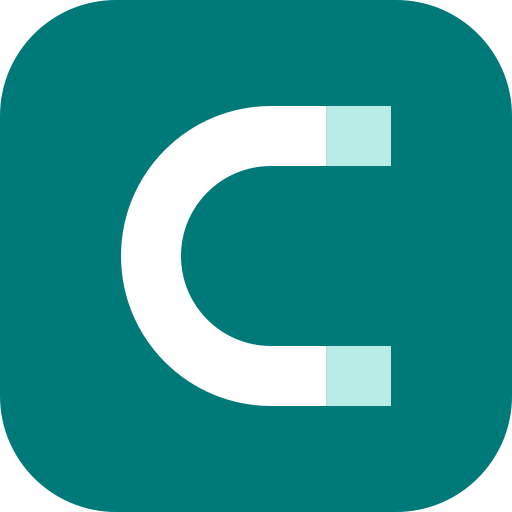

Views by day
1 – 30 March 2026, compared with 30 January – 28 February
This period 812,460
Previous period 686,190
Provisional days
The mark is the letter C drawn as an open ring, and the dot that closes it. The ring is the path from content to a sale; the dot is the moment the two are connected. The same dot marks the current place in the navigation and the latest point of a trend line.

One teal carries actions, selection and the first chart series. Neutrals lean toward the same hue. Green, amber, red and blue are reserved for states and always ship with an icon and a word.
IBM Plex Sans and IBM Plex Sans Arabic are one family drawn for both scripts. Arabic text is set one pixel larger with two pixels more leading. Digits are Western in both languages.
1 – 30 March 2026, compared with 30 January – 28 February
| Content | Published | Views | Reach | Interactions | Avg. watch time |
|---|---|---|---|---|---|
| Ramadan offer teaserReel | 14 Mar | 48,210 | 31,870 | 3,942 | 0:11 |
| Iftar menu carouselFeed post | 11 Mar | 21,406 | 15,932 | 1,208 | Not for posts |
| Behind the scenesStory | 9 Mar | 9,871 | Too few to report | 142 | Not for stories |
@olive.thyme
Olive & Thyme Kitchen
Connect stops reading this account now and deletes its stored analytics within 72 hours. Reports that use it will show no data.
Content performance appears here after Olive & Thyme connects Instagram or YouTube. Connect reads analytics only and never posts.
Concept. Needs the identity and attribution reports.
Opened the link in “Ramadan offer teaser”
Visited the offer page twice
Sent the booking form
Paid EGP 1,000.00, later refunded EGP 200.00
A number that is missing, unsupported, stale or partial is never drawn as zero. Each state has one icon, one word and one sentence that says why.
Views
812,460
+18.4%vs previous 30 days
Interactions Provisional
48,210
No comparison while the last 2 days can still change.
Ad spend Stale
EGP42,300.00
Last synced 3 days ago. Newer spend is not included.
Net revenue Partial
EGP128,450.75
Verified so far. 3 payments are still being matched.
Reach
No total
Reach counts unique accounts each day and cannot be added up.
Story replies
Missing
MissingInstagram returned no value: too few viewers.
Link taps on stories
Unsupported
UnsupportedInstagram does not offer this metric for stories.
Watch time
Not synced
Not syncedThis period is older than the stored history.
تنعكس الواجهة كلها مع اتجاه القراءة، وتبقى الأرقام والروابط وأسماء الحسابات من اليسار إلى اليمين. الرسوم الزمنية تحتفظ باتجاه الزمن من اليسار إلى اليمين.
المشاهدات
812,460
+18.4%عن الـ30 يومًا السابقة
صافي الإيراد جزئي
128,450.75ج.م
الموثَّق حتى الآن. ما زالت 3 مدفوعات قيد المطابقة.
@olive.thyme